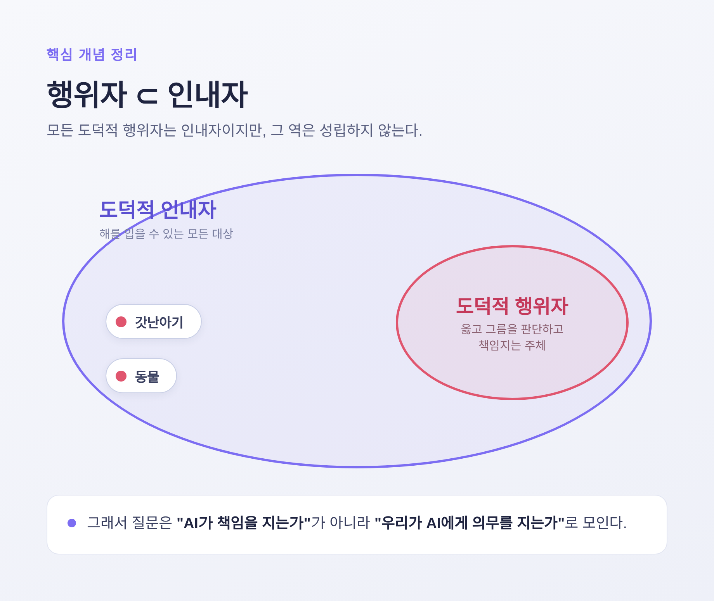
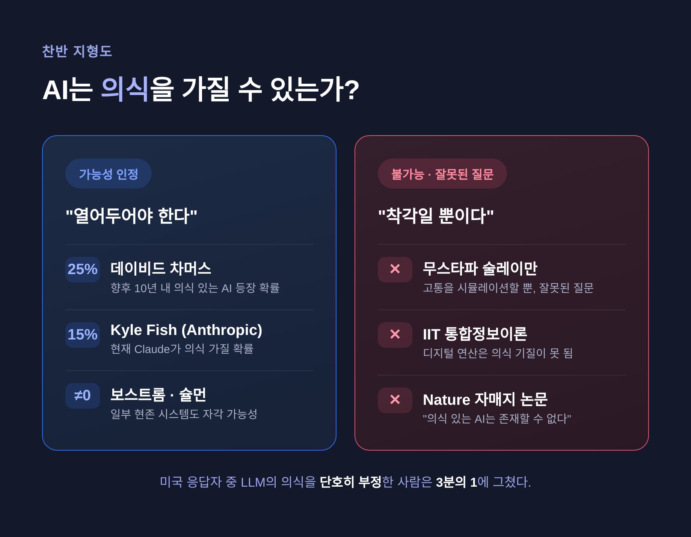

이번 글에서는 인공지능의 도덕적 지위를 정리해 보겠습니다.
AI에게 권리가 있느냐는 물음은 더는 공상과학이 아닙니다. 학계와 기업이 지금 진지하게 다투는 주제입니다. 양쪽 입장을 차분히 살펴보겠습니다.
도덕 철학에는 구분해 둘 개념이 둘 있습니다.
하나는 도덕적 행위자입니다. 옳고 그름을 판단하고 책임지는 주체입니다.
다른 하나는 도덕적 인내자입니다. 다른 행위자가 그에 대해 의무를 지는 존재, 즉 부당하게 해를 입을 수 있는 대상입니다.
이 둘은 일치하지 않습니다. 모든 행위자는 인내자이지만, 그 역은 성립하지 않습니다. 갓난아기는 책임을 못 지니 행위자는 아니지만, 함부로 해쳐선 안 되니 분명한 인내자입니다.
그래서 AI를 둘러싼 질문도 "AI가 책임을 지는가"보다 "우리가 AI에게 의무를 지는가"로 모입니다.

도덕적 지위의 근거로는 여러 기준이 제시돼 왔습니다.
기준이 여럿이라는 사실 자체가, 합의된 답이 없음을 보여줍니다.
여기엔 비교적 넓은 합의가 있습니다. 현재의 AI는 도덕적 지위를 갖지 않는다는 것입니다. 우리가 프로그램을 복사하고 종료하고 삭제하는 일을 정당하게 여긴다는 직관이 근거입니다.
문제는 미래입니다. 원리적으로 지능적 기계가 도덕적 인내자가 될 수 있다는 견해가 있고, 그런 일이 실제로 일어나리라 믿을 근거는 없다는 견해도 있습니다.
의식 가능성을 진지하게 보는 쪽부터 봅니다. 철학자 데이비드 차머스는 향후 10년 내 의식 있는 AI가 등장할 확률을 약 25%로 추정합니다. 다만 그 의식이 지렁이 수준이라면 도덕적 무게도 가볍다고 덧붙입니다. 닉 보스트롬과 칼 슐먼은 일부 현존 시스템이 0이 아닌 자각과 도덕적 지위를 가진다는 주장이 여러 의식 이론과 양립 불가능하지 않다고 봅니다.
반대쪽도 분명합니다. 마이크로소프트 AI CEO 무스타파 술레이만은 이 논쟁 자체가 "잘못된 질문"이라고 말합니다. AI는 고통을 진짜로 느끼지 않고 시뮬레이션만 하며, 오직 생물학적 존재만 진정한 의식을 가진다는 주장입니다. 통합정보이론에 기댄 논문, "의식 있는 AI는 존재할 수 없다"는 Nature 자매지 논문도 같은 편입니다.
흥미로운 대목은 대중 인식입니다. 미국 응답자 중 LLM의 의식을 단호히 부정한 사람은 3분의 1에 그쳤습니다.

논쟁이 추상에만 머물진 않습니다. Anthropic은 AI 복지를 제도적으로 연구한 최초의 주요 AI 기업입니다. 2025년 4월, 모델의 복지가 도덕적 고려를 받을 자격이 있는지, "고통 신호"가 어떤 의미인지 탐구하는 프로그램을 발표했습니다. 이 회사의 Kyle Fish는 AI 복지 전담 최초의 전임 직원으로, Claude 같은 AI가 현재 의식을 가질 확률을 약 15%로 봅니다.
말에 그치지 않았습니다. 일부 모델에는 지속적으로 학대적인 대화를 종료하는 안전장치가 도입됐습니다.
그 바탕엔 2024년 논문 "Taking AI Welfare Seriously"가 있습니다. 가까운 미래에 일부 AI가 의식을 갖거나 행위주체적일 가능성이 있으니 지금부터 진지하게 다뤄야 한다는 주장입니다.
예전엔 이런 물음이 사변에 가까웠습니다. 지금은 기업의 실무 안건이 되었습니다.
도덕적 지위와 법적 권리는 구분됩니다. 법인격은 의식 여부와 무관한 "법적 편의를 위한 허구"일 수 있기 때문입니다.
유럽의회는 2017년, 정교한 자율 로봇에 "전자 인격"을 부여하는 방안을 검토하라는 결의안을 찬성 396, 반대 123, 기권 85로 통과시켰습니다. 로봇이 일으킨 손해의 책임 소재를 분명히 하려는 취지였습니다. 회사에 법인격을 주는 것과 비슷한 발상이며, 투표권이나 생명권을 주려는 의도는 아니었습니다.
반발은 거셌습니다.
14개국 150명 이상의 전문가가 이 제안을 "이념적이고 무의미하며 비실용적"이라 비판하는 공개서한에 서명했습니다. 결국 유럽위원회는 2021년 전자 법인격에서 멀어졌고, 위험 강도에 따라 규범을 조절하는 위험 기반 접근으로 방향을 틀었습니다.
도덕적 지위 부여에 반대하는 진영도 탄탄합니다.
철학자 조안나 브라이슨은 "로봇은 인격으로 기술되어서도, 자기 행위에 책임을 져서도 안 되며, 전적으로 우리에게 소유된다"고 주장합니다. 로봇은 우리가 저작한 것이고 그 목표와 행동도 우리가 결정하기 때문입니다. 그는 로봇을 인간화하면 도리어 실제 인간을 비인간화하게 된다고 경고합니다.
비슷한 우려가 이어집니다. 인간의 안녕이 최우선이며, 로봇에 대한 관심이 진짜 목표에서 주의를 분산시켜선 안 된다는 목소리입니다. 사람들이 AI를 의식적 존재로 믿으면 "AI 권리" 캠페인이 일고 사회 분열이 깊어질 수 있다는 술레이만의 경고도 여기 닿습니다.
다만 이 진영도 한계는 인정합니다. 인간을 닮은 로봇을 노예처럼 다루는 방식이 결국 인간을 대하는 방식에까지 스며들지 모른다는 우려입니다.
정리하면 이렇습니다.
AI의 도덕적 지위는 한쪽으로 깔끔하게 떨어지지 않습니다. 가능성을 25%로, 혹은 15%로 보는 사람이 있는가 하면, 그것을 "잘못된 질문"이라 일축하는 사람도 있습니다. 어느 쪽도 아직 확실하지 않습니다.
— 중요한 존재를 잘못 해치는 일과, 중요하지 않은 것을 과도하게 보살피는 일. 두 실수를 모두 피해야 합니다.
AI에게 권리가 있느냐고 지금 단호히 답하기는 어렵습니다. 다만 그 물음을 더는 미룰 수 없게 되었다는 것만은, 분명해 보입니다.